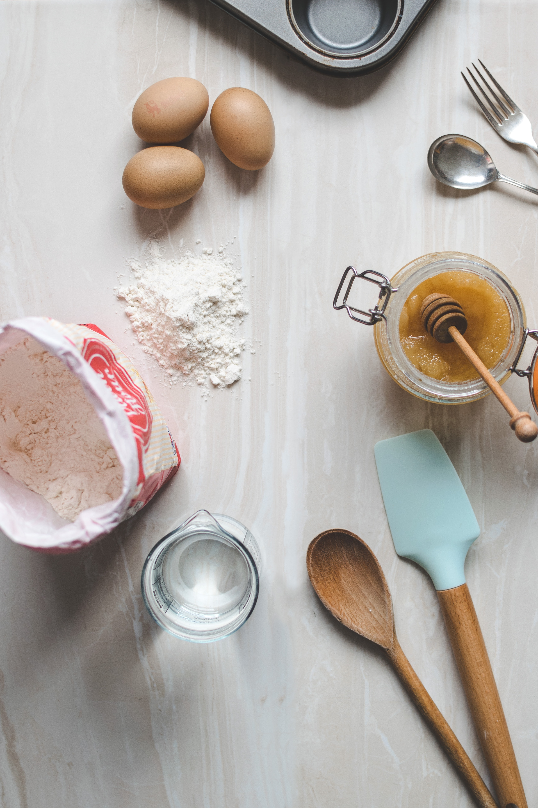

Ingredients 재료준비하기
for 9 servings
- 8 oz good-quality chocolate (225 g), semi-sweet
- 12 tablespoons butter, melted
- 1 ¼ cups sugar (250 g)
- 2 eggs
- 2 teaspoons vanilla extract
- ¾ cup all-purpose flour (95 g)
- ¼ cup cocoa powder (30 g)
- 1 teaspoon salt
←Back to home
